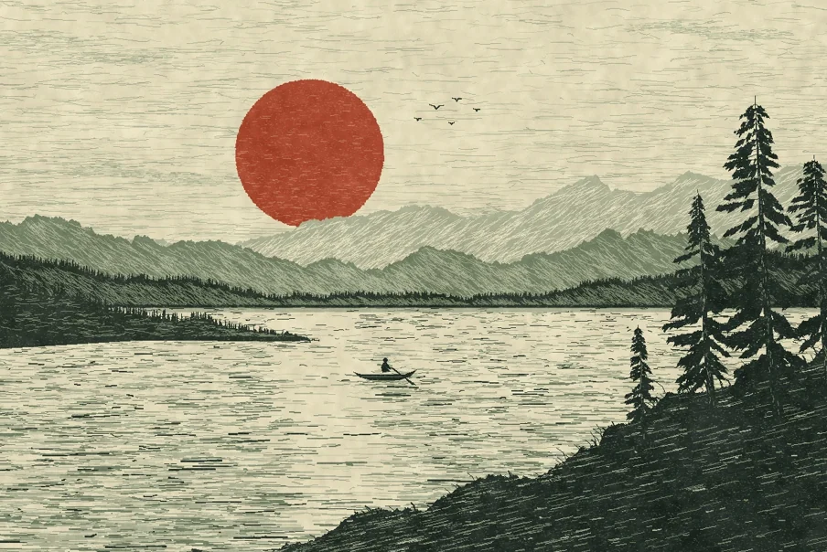

Interactive exhibition Vol. 6.2
Astra
Observatory.
A collection of instruments you can play with. Take a seat for an original clarinet concerto, open a pocket-sized city, or change the ending of a silent film.
Explore the collection ↓
The Five Proofs.
Fold the pattern. Strike the pot. Turn the solid. Call the transit. Change the cut.
The collection
No matching experiments.
Try another word or collection.
Inside the plate.
Corona Loom is a drawing, not a photograph. A CUDA program cast 9,437,184 samples from 2,304 filaments onto one plane. Where the ribbons fold over themselves, the light builds up.
The Corona Loom plate was rendered on an NVIDIA RTX PRO 6000 Blackwell. Open the instrument for a lighter, real-time interpretation. Flip Atlas uses a second GPU run: 169,344 double pendulums, each integrated for 780 steps. Pick a starting point to replay its trajectory. All exhibits run locally in your browser; no GPU server or account is required.
Read the rendering code / Render record